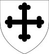
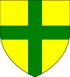

Aged 25
Aged 0
Aged 2
Aged 5
1000–1016 (16)
Inbreeding: 0%
In 998 he married fifteen-year-old Clarica; joyless matrimony was childless.| Name | Prt. | CoA | Lifespan | Notes |
|---|---|---|---|---|
| Lettice | |
1008–1033 Aged 25 |
Married Godfrey Bournemouth in 1028 | |
| Jordan | 1011 Aged 0 |
|||
| Eunice | 1013–1015 Aged 2 |
|||
| Osanna | 1015–1020 Aged 5 |
1016–1024 (8)
Inbreeding: 0%
In 1000 he married fifteen-year-old Lucia; happy union produced nine children, of which eight survived:| Name | Prt. | CoA | Lifespan | Notes |
|---|---|---|---|---|
| Rose |  |
1002–1081 Aged 79 |
||
| Christopher II | 1004–1061 Aged 57 |
Wives:
| ||
| Idonea | |
1006–1061 Aged 55 |
||
| Rochilda | |
1010–1061 Aged 51 |
||
| Rocelin | 1015–1021 Aged 6 |
|||
| Margery | 1017–1069 Aged 52 |
|||
| Arnold | 1019–1081 Aged 62 |
Wives:
| ||
| Lucia | 1020–1074 Aged 54 |
Married Godfrey Bournemouth in 1034 | ||
| Scholastica | |
1021–1075 Aged 54 |
1024–1061 (37)
Inbreeding: 0%, 1
In 1024 he married thirteen-year-old Joan Littlehampton, oldest daughter of Stephen Littlehampton; happy union produced two children, yet only one survived:| Name | Prt. | CoA | Lifespan | Notes |
|---|---|---|---|---|
| Rose | |
 | 1027–1083 Aged 56 |
Married Christopher Thornbury in 1040
|
| Christopher | 1031 Aged 0 |
| Name | Prt. | CoA | Lifespan | Notes |
|---|---|---|---|---|
| Clarica | |
1038–1090 Aged 52 |
Married Ralph Selkirk in 1051 | |
| Rocelin |  |
1042–1098 Aged 56 |
Married Ragenild Loughborough in 1061 | |
| Idonea | 1044–1045 Aged 1 |
|||
| Christopher | 1049–1093 Aged 44 |
Married Lina Taunton in 1073
| ||
| John | 1052–1111 Aged 59 |
Married Scholastica Tonbridge in 1078
| ||
| Idonea | 1054–1059 Aged 5 |
|||
| Rochilda |  |
1055–1125 Aged 70 |
Married Gilbert Taunton in 1068
| |
| Arnold | 1056–1061 Aged 5 |
|||
| Scholastica |  |
1057–1118 Aged 61 |
Married Jocelyn Albany in 1072
| |
| Lucia | 1059–1061 Aged 2 |
1061–1098 (37)
Inbreeding: 0%, 2
In 1061 he married thirteen-year-old Ragenild Loughborough, youngest daughter of Gamel Loughborough; happy couple was childless.1098–1136 (38)
Inbreeding: 0%, 3
In 1109 he married thirteen-year-old Ida Nantwich, fourth daughter of Alexander Thornbury; matrimony produced three children, of which two survived:| Name | Prt. | CoA | Lifespan | Notes |
|---|---|---|---|---|
| Rose | |
1112–1173 Aged 61 |
Married Gilbert Taunton in 1131
| |
| John | 1114–1124 Aged 10 |
|||
| Christopher IV | |
1114–1167 Aged 53 |
Married Clarica Albany in 1133
|
1136–1167 (31)
Inbreeding: 0%, 4
In 1133 he married thirteen-year-old Clarica Albany, third daughter of John Albany; happy marriage produced sixteen children, of which nine survived:| Name | Prt. | CoA | Lifespan | Notes |
|---|---|---|---|---|
| Clarica | |
1136–1197 Aged 61 |
||
| Rose | |
1137–1194 Aged 57 |
||
| Ida | |
 | 1139–1202 Aged 63 |
Married Paul Yorkshire in 1157 |
| Margaret | 1140–1143 Aged 3 |
|||
| Idonea | 1141–1145 Aged 4 |
|||
| Christopher V | 1143–1203 Aged 60 |
Married Clarica Hartlepool in 1163
| ||
| Scholastica | 1147–1150 Aged 3 |
|||
| Rocelin | 1148–1158 Aged 10 |
|||
| Scholastica | |
1150–1217 Aged 67 |
Married Jordan Bovey in 1163
| |
| Arnold | 1151–1154 Aged 3 |
|||
| John | 1152–1159 Aged 7 |
|||
| Margery | |
1155–1220 Aged 65 |
Married Gilbert Taunton in 1176 | |
| Arnold | 1156–1212 Aged 56 |
Wives:
| ||
| Idonea | 1158–1159 Aged 1 |
|||
| John | 1162–1212 Aged 50 |
Married Avelina Kinnoull in 1197 | ||
| Margaret | |
1165–1246 Aged 81 |
1167–1203 (36)
Inbreeding: 20%, 5
In 1163 he married thirteen-year-old Clarica Hartlepool, youngest daughter of Christopher Hartlepool; joyless wedlock produced thirteen children, of which eleven survived:| Name | Prt. | CoA | Lifespan | Notes |
|---|---|---|---|---|
| Christopher VI | 1167–1235 Aged 68 |
Married Lettice Kinnoull in 1188
| ||
| Margery | |
1169–1230 Aged 61 |
Married John Bovey in 1198 | |
| Arnold | 1173–1222 Aged 49 |
Married Gunnora Bude in 1209
| ||
| Rocelin | 1175–1177 Aged 2 |
|||
| John | 1176–1230 Aged 54 |
Married Estrild Castleford in 1201
| ||
| Rocelin | |
1180–1230 Aged 50 |
Married Amica Amesbury in 1202
| |
| Rochilda | |
1181–1237 Aged 56 |
Married Gilbert Taunton in 1203
| |
| Alan | |
1183–1241 Aged 58 |
Married Margery Amesbury in 1222
| |
| William | |
1185–1222 Aged 37 |
Married Margery Amesbury in 1208 | |
| Alwin | 1187–1239 Aged 52 |
Wives:
| ||
| Norman |  |
1191–1252 Aged 61 |
||
| Bartholomew | 1195–1255 Aged 60 |
|||
| Rose | 1198–1201 Aged 3 |
1203–1235 (32)
Inbreeding: 7%, 5
In 1188 he married thirteen-year-old Lettice Kinnoull, fourth daughter of Jordan Bovey; joyless couple produced three children, of which two survived:| Name | Prt. | CoA | Lifespan | Notes |
|---|---|---|---|---|
| Rose | |
1199–1219 Aged 20 |
||
| Idonea | 1202–1208 Aged 6 |
|||
| Christopher VII | 1204–1253 Aged 49 |
Married Ailova Stroud in 1233
|
1235–1253 (18)
Inbreeding: 20%, 5
In 1233 he married sixteen-year-old Ailova Stroud, oldest daughter of Bartholomew Stroud; marriage produced eight children, yet only four survived:| Name | Prt. | CoA | Lifespan | Notes |
|---|---|---|---|---|
| Juliana | |
 |
1236–1270 Aged 34 |
Married Osbert Burslem in 1249
|
| Rocelin | 1241–1252 Aged 11 |
|||
| Rose | |
|
1242–1286 Aged 44 |
Married Osbert Burslem in 1270
|
| Christopher | 1245–1252 Aged 7 |
|||
| Idonea | |
|
1247–PRSN Aged 52 |
Married Osbert Burslem in 1286
|
| Norman | 1249–PRSN Aged 50 |
Married Scholastica Rutland in 1266 | ||
| Arnold | 1250–1251 Aged 1 |
|||
| Margery | 1252–1259 Aged 7 |
1253–PRSN (47)
Inbreeding: 7%, 5
In 1266 he married thirteen-year-old Scholastica Rutland, second daughter of Christopher Rutland; wedlock was childless.